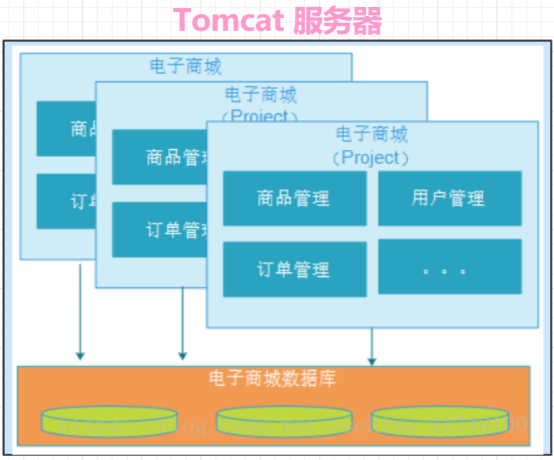
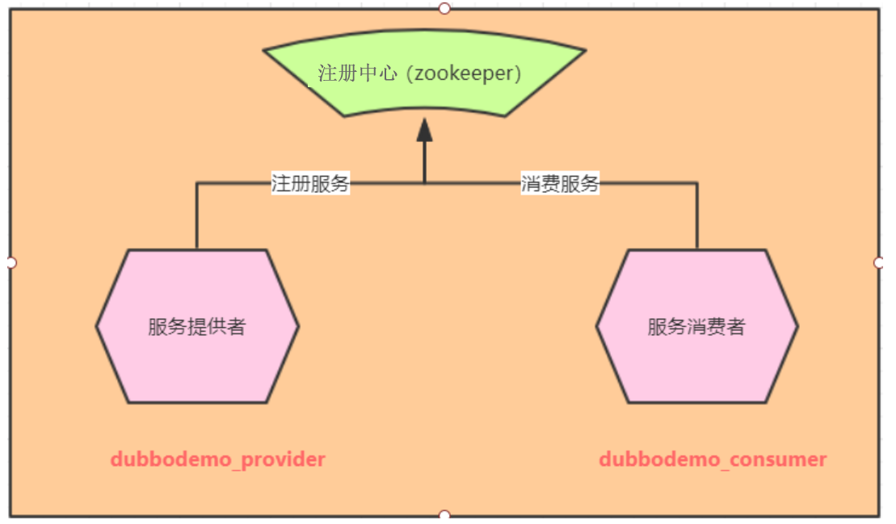

学习目标
能够描述传统架构和分布式架构
能够理解dubbo的作用
能够描述dubbo提供的@Service和@Reference注解的作用
独立完成dubbo的入门案例
1. 软件架构的发展过程
介绍
软件架构的发展经历了从单体结构（集中式架构）、垂直架构、分布式架构到微服务架构的过程。
集中式架构（单体应用）
当网站流量很小时，只需==一个应用，将所有功能都部署在一起==，以减少部署节点和成本。此时，用于简化增删改查工作量的数据访问框架(ORM)是影响项目开发的关键。

优点：
所有的功能集成在一个项目工程中，开发方便。
所有的功能打一个war包部署到服务器，部署方便。
缺点：
==无法针对不同模块进行针对性能优化，如果需要提高性能只能整体一起提高==
单点容错率低，并发能力差， 全部功能集成在一个工程中，==对于大型项目不易开发、扩展及维护。==
系统性能扩展只能通过扩展集群结点，成本高、有瓶颈。
垂直架构
当访问量逐渐增大，单一应用无法满足需求，此时为了应对更高的并发和业务需求，==我们根据业务功能对系统进行拆分。==
优点：
- 系统拆分实现了流量分担，解决了并发问题
- 可以针对不同模块进行优化
- 方便水平扩展，负载均衡，容错率提高
- 系统间相互独立
缺点：
- 服务之间相互调用，如果某个服务的端口或者ip地址发生改变，调用的系统得手动改变
- ==存在重复、数据据冗余==
分布式架构
当垂直应用越来越多，应用之间交互不可避免，将==核心公共通用的业务抽取==出来，作为独立的服务，逐渐形成稳定的服务中心，使前端应用能更快速的响应多变的市场需求。此时，用于提高业务复用及整合的分布式调用是关键。
分布式架构的关键：
1.通俗理解： 一件事情分开来做
2. 设计角度： 把公用的业务抽取出来做成独立的服务（独立项目），可以给各个业务系统去重复去调用
3. 代码角度： 原来集中式架构是web与service放在一起。==分布式把service、dao发布为一个单独的服务==。通过地址来访问服务接口的方法。
优点：
- 将基础服务进行了抽取，系统间相互调用，提高了代码复用和开发效率
- 每个服务扩展能力强，同时并发能力大大增强
缺点：
- 系统间耦合度变高，调用关系错综复杂，维护变得困难
SOA架构(面向服务架构)
什么是SOA？ SOA架构就是分布式架构添加了==监控中心与调度中心==就可以称作为SOA。
SOA全称为Service-Oriented Architecture，==即面向服务的架构。== 它可以根据需求通过网络对松散耦合的粗粒度应用组件(服务)进行分布式部署、组合和使用。一个服务通常以独立的形式存在于操作系统进程中。
站在功能的角度，把业务逻辑抽象成可复用、可组装的服务，通过服务的编排实现业务的快速再生，目的：把原先固有的业务功能转变为通用的业务服务，实现业务逻辑的快速复用。
通过上面的描述可以发现SOA有如下几个特点：分布式、可重用、扩展灵活、松耦合。
原来的单体工程项目大多分为三层：表现层(Controller)、业务层(Service)、持久层(Dao)，要改为SOA架构，其实就是将业务层提取为服务并且独立部署即可，表现层通过网络和业务层进行通信，如下图：
原来的单体项目如何改为SOA架构？
下图以电商系统举例来说明SOA架构：
小结
软件的架构发展历程
1. 集中式架构
2. 垂直架构
3. 分布式架构
4. 面向服务架构= 分布式架构+ 监控中心与调度中心2. Apache Dubbo（一）介绍
Apache Dubbo是一款高性能的Java RPC框架。其前身是阿里巴巴公司开源的一个高性能、轻量级的开源Java RPC框架，可以和Spring框架无缝集成。【==RPC Remote Process Callable 表示远程调用的意思==】
借助Dubbo可以实现基于SOA架构的软件设计。
官网：
3. Apache Dubbo（二）服务注册中心Zookeeper
目标
- 介绍
- 安装启动
介绍
- Zookeeper 是 Apache Hadoop 的子项目，是一个树型的目录服务，支持变更推送，适合作为 Dubbo 服务的注册中心，工业强度较高，可用于生产环境，并推荐使用 。
- Zookeeper树型目录服务：
windows安装启动（==建议别使用，因为不稳定==）
==windows版本的zookeeper可能会出现偶尔连接不上的情况，如果某些同学机器特别卡，启动虚拟机的时候比较慢，这时候可以使用widnows版本的测试。==
linux安装启动
==安装完毕zookeeper之后马上拍快照,因为强制关机的时候容易损坏zookeeper的文件，会导致第二天无法启动。==
安装zookeeper之前一定要确保：
防火墙需要关闭,而且要在不要开机又自启。 (如果在服务器中千万就别直接关闭防火墙，应该是开发2181端口)
1. systemctl status firewalld 查看当前防火墙的状态 2. systemctl stop firewalld 关闭防火墙 3. systemctl disable firewalld 设置重启的时候不要自启==把ip地址设置为静态的ip地址。(查看你之前的文档即可)==
> # 先确保jdk环境已经安装 ： java -version 1.8
> # 把zookeeper的压缩包上传/usr/soft目录中
> # cd /usr/soft 进入到soft目录
> # tar -zxvf zookeeper-3.4.6.tar.gz 进入压缩包所在的目录，把压缩包上传到 linux 系统 ，解压压缩包
> # cd zookeeper-3.4.6 进入zookeeper-3.4.6目录
> # mkdir data 在zookeeper-3.4.6目录下创建data目录
> # cd conf 进入conf目录
> # mv zoo_sample.cfg zoo.cfg 把zoo_sample.cfg 改名为zoo.cfg
> # vim zoo.cfg 打开zoo.cfg文件, 按下i，修改dataDir属性：
dataDir=/usr/soft/zookeeper-3.4.6/data/
># cd /usr/soft/zookeeper-3.4.6/bin/ 进入到bin目录中
> # ./zkServer.sh start 进入bin目录，启动服务命令 > # ./zkServer.sh stop(别停止) 停止服务命令
> # ./zkServer.sh status 查看服务状态 ==注意： 以后使用dubbo的时候一定要先启动zookeeper==
4. Dubbo入门案例- 分析
Dubbo作为一个RPC框架，其最核心的功能就是要实现跨网络的远程调用。本小节就是要创建两个应用，一个作为服务的提供者，一个作为服务的消费者。通过Dubbo来实现服务消费者远程调用服务提供者的方法。
5. Dubbo入门案例- 服务提供者
说明
Dubbo作为一个RPC框架，其最核心的功能就是要实现跨网络的远程调用。当前入门案例就是要创建两个应用，一个作为服务的提供者，一个作为服务的消费者。通过Dubbo来实现服务消费者远程调用服务提供者的方法。
目标
本单元主要实现：创建服务提供者项目、实现发布服务。
步骤
- 创建web项目: dubbodemo_provider
- 添加依赖
- 编写web.xml(编写一个监听器加载dubbo的核心配置文件)
- 编写dubbo-provider.xml(spring整合dubbo)
- 编写服务接口
- 编写服务实现
- 启动tomcat，发布项目 log4j
实现
创建web项目: dubbodemo_provider,转换为web项目

添加依赖
<?xml version="1.0" encoding="UTF-8"?> <project xmlns="http://maven.apache.org/POM/4.0.0" xmlns:xsi="http://www.w3.org/2001/XMLSchema-instance" xsi:schemaLocation="http://maven.apache.org/POM/4.0.0 http://maven.apache.org/xsd/maven-4.0.0.xsd"> <modelVersion>4.0.0</modelVersion> <groupId>cn.itcast</groupId> <artifactId>dubbodemo_provider</artifactId> <version>1.0-SNAPSHOT</version> <packaging>war</packaging> <properties> <spring.version>5.0.2.RELEASE</spring.version> </properties> <dependencies> <dependency> <groupId>org.springframework</groupId> <artifactId>spring-context</artifactId> <version>${spring.version}</version> </dependency> <dependency> <groupId>org.springframework</groupId> <artifactId>spring-beans</artifactId> <version>${spring.version}</version> </dependency> <dependency> <groupId>org.springframework</groupId> <artifactId>spring-webmvc</artifactId> <version>${spring.version}</version> </dependency> <dependency> <groupId>org.springframework</groupId> <artifactId>spring-jdbc</artifactId> <version>${spring.version}</version> </dependency> <dependency> <groupId>org.springframework</groupId> <artifactId>spring-aspects</artifactId> <version>${spring.version}</version> </dependency> <dependency> <groupId>org.springframework</groupId> <artifactId>spring-jms</artifactId> <version>${spring.version}</version> </dependency> <dependency> <groupId>org.springframework</groupId> <artifactId>spring-context-support</artifactId> <version>${spring.version}</version> </dependency> <!-- dubbo相关 --> <dependency> <groupId>com.alibaba</groupId> <artifactId>dubbo</artifactId> <version>2.6.6</version> </dependency> <dependency> <groupId>io.netty</groupId> <artifactId>netty-all</artifactId> <version>4.1.32.Final</version> </dependency> <dependency> <groupId>org.apache.curator</groupId> <artifactId>curator-framework</artifactId> <version>4.0.0</version> <exclusions> <exclusion> <groupId>org.apache.zookeeper</groupId> <artifactId>zookeeper</artifactId> </exclusion> </exclusions> </dependency> <dependency> <groupId>org.apache.zookeeper</groupId> <artifactId>zookeeper</artifactId> <version>3.4.7</version> </dependency> <dependency> <groupId>com.github.sgroschupf</groupId> <artifactId>zkclient</artifactId> <version>0.1</version> </dependency> </dependencies> </project>编写web.xml
<?xml version="1.0" encoding="UTF-8"?> <web-app xmlns:xsi="http://www.w3.org/2001/XMLSchema-instance" xmlns="http://java.sun.com/xml/ns/javaee" xsi:schemaLocation="http://java.sun.com/xml/ns/javaee http://java.sun.com/xml/ns/javaee/web-app_2_5.xsd" version="2.5"> <!--编写监听器加载dubbo的核心配置文件的--> <listener> <listener-class>org.springframework.web.context.ContextLoaderListener</listener-class> </listener> <context-param> <param-name>contextConfigLocation</param-name> <param-value>classpath:dubbo-provider.xml</param-value> </context-param> </web-app>编写dubbo-provider.xml
图1：
图2：
<?xml version="1.0" encoding="UTF-8"?> <beans xmlns="http://www.springframework.org/schema/beans" xmlns:xsi="http://www.w3.org/2001/XMLSchema-instance" xmlns:dubbo="http://code.alibabatech.com/schema/dubbo" xsi:schemaLocation="http://www.springframework.org/schema/beans http://www.springframework.org/schema/beans/spring-beans.xsd http://code.alibabatech.com/schema/dubbo http://code.alibabatech.com/schema/dubbo/dubbo.xsd"> <!--1. 应用名称--> <dubbo:application name="dubbodemo_provider"/> <!--2. 配置zookeeper的地址与端口--> <dubbo:registry address="zookeeper://192.168.179.128" port="2181"/> <!--3.dubbo使用的协议,这里的20880端口是可以随意修改的--> <dubbo:protocol name="dubbo" port="20880"/> <!--4. 进行包扫描--> <dubbo:annotation package="cn.itcast.service"/> </beans>编写服务接口
package cn.itcast.service;
public interface HelloService {
public String sayHello(String name);
}
- 编写服务实现。注意这里的@Service引入的包。
package cn.itcast.service.impl;
import cn.itcast.service.HelloService;
import com.alibaba.dubbo.config.annotation.Service;
/*
如果该类需要变成一个服务类，那么该类需要使用一个注解@Service
但是注意：一定要使用阿里巴巴的Service注解
*/
@Service
public class HelloServiceImpl implements HelloService {
@Override
public String sayHello(String name) {
return "hello:"+ name;
}
}
最后，把lo4j.properties拷贝到resources目录下
- 启动tomcat，发布项目
小结
注意：@Service所在的包，要引入dubbo支持包。不要引入spring的包
dubbo服务的编写步骤：
1. 导入依赖
2. 编写web.xml文件配置监听器加载dubbo的核心配置文件
3. 编写核心配置文件
- 应用名称
- 注册中心地址与端口
- dubbo协议
- 包扫描
4. 编写服务接口
5. 编写服务实现类6. Dubbo入门案例- 服务消费者
目标
创建服务消费者项目，实现服务的消费。也叫做调用服务。
步骤
- 创建web项目: dubbodemo_consumer
- 添加依赖
- 编写web.xml
- 编写springmvc.xml(springmvc配置+ spring整合dubbo的配置 )
- 编写服务接口
- 编写控制器，调用服务
- 启动tomcat，测试，观察服务是否调用成功。
实现
创建web项目: dubbodemo_consumer
添加依赖
<?xml version="1.0" encoding="UTF-8"?> <project xmlns="http://maven.apache.org/POM/4.0.0" xmlns:xsi="http://www.w3.org/2001/XMLSchema-instance" xsi:schemaLocation="http://maven.apache.org/POM/4.0.0 http://maven.apache.org/xsd/maven-4.0.0.xsd"> <modelVersion>4.0.0</modelVersion> <groupId>cn.itcast</groupId> <artifactId>dubbodemo_consumer</artifactId> <version>1.0-SNAPSHOT</version> <packaging>war</packaging> <properties> <spring.version>5.0.2.RELEASE</spring.version> </properties> <dependencies> <dependency> <groupId>org.springframework</groupId> <artifactId>spring-context</artifactId> <version>${spring.version}</version> </dependency> <dependency> <groupId>org.springframework</groupId> <artifactId>spring-beans</artifactId> <version>${spring.version}</version> </dependency> <dependency> <groupId>org.springframework</groupId> <artifactId>spring-webmvc</artifactId> <version>${spring.version}</version> </dependency> <dependency> <groupId>org.springframework</groupId> <artifactId>spring-jdbc</artifactId> <version>${spring.version}</version> </dependency> <dependency> <groupId>org.springframework</groupId> <artifactId>spring-aspects</artifactId> <version>${spring.version}</version> </dependency> <dependency> <groupId>org.springframework</groupId> <artifactId>spring-jms</artifactId> <version>${spring.version}</version> </dependency> <dependency> <groupId>org.springframework</groupId> <artifactId>spring-context-support</artifactId> <version>${spring.version}</version> </dependency> <!-- dubbo相关 --> <dependency> <groupId>com.alibaba</groupId> <artifactId>dubbo</artifactId> <version>2.6.6</version> <exclusions> <exclusion> <groupId>org.springframework</groupId> <artifactId>spring-web</artifactId> </exclusion> <exclusion> <groupId>org.springframework</groupId> <artifactId>spring-beans</artifactId> </exclusion> <exclusion> <groupId>org.springframework</groupId> <artifactId>spring-context</artifactId> </exclusion> </exclusions> </dependency> <dependency> <groupId>io.netty</groupId> <artifactId>netty-all</artifactId> <version>4.1.32.Final</version> </dependency> <dependency> <groupId>org.apache.curator</groupId> <artifactId>curator-framework</artifactId> <version>4.0.0</version> <exclusions> <exclusion> <groupId>org.apache.zookeeper</groupId> <artifactId>zookeeper</artifactId> </exclusion> </exclusions> </dependency> <dependency> <groupId>org.apache.zookeeper</groupId> <artifactId>zookeeper</artifactId> <version>3.4.7</version> </dependency> <dependency> <groupId>com.github.sgroschupf</groupId> <artifactId>zkclient</artifactId> <version>0.1</version> </dependency> <dependency> <groupId>javax.servlet</groupId> <artifactId>servlet-api</artifactId> <version>2.5</version> </dependency> </dependencies> </project>编写web.xml
<?xml version="1.0" encoding="UTF-8"?> <web-app xmlns:xsi="http://www.w3.org/2001/XMLSchema-instance" xmlns="http://java.sun.com/xml/ns/javaee" xsi:schemaLocation="http://java.sun.com/xml/ns/javaee http://java.sun.com/xml/ns/javaee/web-app_2_5.xsd" version="2.5"> <!--1.配置核心控制器--> <servlet> <servlet-name>dispatcherServlet</servlet-name> <servlet-class>org.springframework.web.servlet.DispatcherServlet</servlet-class> <!--加载springmvc核心配置文件--> <init-param> <param-name>contextConfigLocation</param-name> <param-value>classpath:springmvc.xml</param-value> </init-param> </servlet> <servlet-mapping> <servlet-name>dispatcherServlet</servlet-name> <url-pattern>*.do</url-pattern> </servlet-mapping> </web-app>编写springmvc.xml
<?xml version="1.0" encoding="UTF-8"?> <beans xmlns="http://www.springframework.org/schema/beans" xmlns:xsi="http://www.w3.org/2001/XMLSchema-instance" xmlns:context="http://www.springframework.org/schema/context" xmlns:mvc="http://www.springframework.org/schema/mvc" xmlns:dubbo="http://code.alibabatech.com/schema/dubbo" xsi:schemaLocation="http://www.springframework.org/schema/beans http://www.springframework.org/schema/beans/spring-beans.xsd http://www.springframework.org/schema/context http://www.springframework.org/schema/context/spring-context.xsd http://www.springframework.org/schema/mvc http://www.springframework.org/schema/mvc/spring-mvc.xsd http://code.alibabatech.com/schema/dubbo http://code.alibabatech.com/schema/dubbo/dubbo.xsd"> <!--1.springmvc的配置--> <!--1.1 配置视图解析--> <bean class="org.springframework.web.servlet.view.InternalResourceViewResolver"> <property name="prefix" value="/pages/"/> <property name="suffix" value=".jsp"/> </bean> <!--1.2 开启注解扫描 扫描springmvc注解的--> <context:component-scan base-package="cn.itcast.controller"/> <!--1.3 开启注解驱动--> <mvc:annotation-driven/> <!--2.spring整合dubbo--> <!--2.1 配置应用名称--> <dubbo:application name="dubbodemo_consumer"/> <!--2.2 配置注册中地址--> <dubbo:registry address="zookeeper://192.168.179.128" port="2181"/> <!--2.3 包扫描 扫描dubbo的注解--> <dubbo:annotation package="cn.itcast.controller"/> </beans>编写服务接口。 注意：消费者的服务接口类名称要与服务端接口名称一致；包名与类名都需要一致。
编写控制器，调用服务
package cn.itcast.controller;
import cn.itcast.service.HelloService;
import com.alibaba.dubbo.config.annotation.Reference;
import org.springframework.stereotype.Controller;
import org.springframework.web.bind.annotation.RequestMapping;
import org.springframework.web.bind.annotation.ResponseBody;
@Controller
public class HelloController {
@Reference //注意：千万别导错包，这里导入也是阿里巴巴的包
private HelloService helloService;
@RequestMapping(value ="/hello")
@ResponseBody //可以返回json也返回普通的字符串
/*
乱码问题：如果我们需要返回json数据时候的时候，我们一定要导入jackson依赖、
1. 返回的java的对象，这些java对象会经过jackson去处理，所以不会乱码
2. 如果返回的是普通的字符串，那么是不会经过jackson去处理的，会乱码， @RequestMapping(value ="/hello",produces = "text/json;charset=utf-8")
*/
public String hello(){
return helloService.sayHello("lili");
}
}
启动tomcat，测试，观察服务是否调用成功。
小结
消费者的配置文件
- 应用名称
- 注册中心地址
- 包扫描
7. Dubbo细节（一）通过main函数启动服务
目标
启动提供方服务的两种方式：
- 部署到tomcat启动，适合正式项目
- 通过main函数启动，适合开发阶段
之前已经实现tomcat启动服务，现在实现通过man函数启动
实现
前面是通过tomcat启动的服务，在实际的开发中肯定是用这种方式。其实，还可以通过main函数启动服务
查看dubbo官方介绍
阻塞方法
代码实现如下
package cn.itcast.provider;
import org.springframework.context.support.ClassPathXmlApplicationContext;
import java.io.IOException;
import java.util.Scanner;
/*
使用main函数启动dubbo的服务提供者只需要加载配置文件启动即可。
*/
public class HlelloProvider {
public static void main(String[] args) throws IOException {
ClassPathXmlApplicationContext context = new ClassPathXmlApplicationContext("classpath:dubbo-provider.xml");
context.start();
//注意： 服务一旦启动不能马上就关闭，服务一般都会不关闭，等待别人去调用
//为了让当前程序不关闭，所以这里使用一个阻塞型函数不停止
System.in.read();
}
}
访问测试
==注意： 如果是main方法启动服务的时候，提供者的web.xml文件可以不存在==
8. Dubbo细节（二）dubbo不使用包扫描配置说明
服务提供者-包扫描配置
包扫描配置：
服务提供者和服务消费者都需要配置，表示包扫描，作用是扫描指定包(包括子包)下的类
<dubbo:annotation package="cn.itcast.service"/>
--->扫描dubbo提供的@Service注解服务提供者配置
服务提供者-dubbo-provider.xml不使用包扫描的配置
<?xml version="1.0" encoding="UTF-8"?>
<beans xmlns="http://www.springframework.org/schema/beans"
xmlns:xsi="http://www.w3.org/2001/XMLSchema-instance" xmlns:dubbo="http://code.alibabatech.com/schema/dubbo"
xsi:schemaLocation="http://www.springframework.org/schema/beans
http://www.springframework.org/schema/beans/spring-beans.xsd http://code.alibabatech.com/schema/dubbo http://code.alibabatech.com/schema/dubbo/dubbo.xsd">
<!--1. 应用名称-->
<dubbo:application name="dubbodemo_provider"/>
<!--2. 配置zookeeper的地址与端口-->
<dubbo:registry address="zookeeper://192.168.179.128" port="2181"/>
<!--3.dubbo使用的协议,这里的20880端口是可以随意修改的-->
<dubbo:protocol name="dubbo" port="20880"/>
<!--4. 进行包扫描-->
<!-- <dubbo:annotation package="cn.itcast.service"/>-->
<!--提供者不使用包扫描，那么则需要使用dubbo：service的标签
interface: 服务接口的类全名
class: 服务接口的实现类做成一个服务类
-->
<dubbo:service interface="cn.itcast.service.HelloService" class="cn.itcast.service.impl.HelloServiceImpl"/>
</beans>服务消费者-包扫描配置
服务消费者-不使用包扫描的配置
<?xml version="1.0" encoding="UTF-8"?>
<beans xmlns="http://www.springframework.org/schema/beans"
xmlns:xsi="http://www.w3.org/2001/XMLSchema-instance"
xmlns:context="http://www.springframework.org/schema/context"
xmlns:mvc="http://www.springframework.org/schema/mvc" xmlns:dubbo="http://code.alibabatech.com/schema/dubbo"
xsi:schemaLocation="http://www.springframework.org/schema/beans
http://www.springframework.org/schema/beans/spring-beans.xsd http://www.springframework.org/schema/context http://www.springframework.org/schema/context/spring-context.xsd http://www.springframework.org/schema/mvc http://www.springframework.org/schema/mvc/spring-mvc.xsd http://code.alibabatech.com/schema/dubbo http://code.alibabatech.com/schema/dubbo/dubbo.xsd">
<!--1.springmvc的配置-->
<!--1.1 配置视图解析-->
<bean class="org.springframework.web.servlet.view.InternalResourceViewResolver">
<property name="prefix" value="/pages/"/>
<property name="suffix" value=".jsp"/>
</bean>
<!--1.2 开启注解扫描 扫描springmvc注解的-->
<context:component-scan base-package="cn.itcast.controller"/>
<!--1.3 开启注解驱动-->
<mvc:annotation-driven/>
<!--2.spring整合dubbo-->
<!--2.1 配置应用名称-->
<dubbo:application name="dubbodemo_consumer"/>
<!--2.2 配置注册中地址-->
<dubbo:registry address="zookeeper://192.168.179.128" port="2181"/>
<!--2.3 包扫描 扫描dubbo的注解-->
<!--<dubbo:annotation package="cn.itcast.controller"/>-->
<!--如果消费者不使用注解扫描，需要使用<dubbo:reference标签
interface: 需要给该接口远程注入一个对象。(服务器启动的时候就会去zookeeper上面去找
是否有一个服务的接口名是helloService的，如果有就直接把该服务实现类对象存储到spring的容器中)
-->
<dubbo:reference id="helloService" interface="cn.itcast.service.HelloService"/>
</beans>HelloController代码
package cn.itcast.controller;
import cn.itcast.service.HelloService;
import com.alibaba.dubbo.config.annotation.Reference;
import org.springframework.beans.factory.annotation.Autowired;
import org.springframework.beans.factory.annotation.Qualifier;
import org.springframework.stereotype.Controller;
import org.springframework.web.bind.annotation.RequestMapping;
import org.springframework.web.bind.annotation.ResponseBody;
@Controller
public class HelloController {
//@Reference //注意：千万别导错包，这里导入也是阿里巴巴的包
@Autowired
@Qualifier("helloService") //如果是远程注入该对象，首先服务接口必须有一个id，然后必须指定名字去注入
private HelloService helloService;
@RequestMapping(value ="/hello")
@ResponseBody //可以返回json也返回普通的字符串
/*
乱码问题：如果我们需要返回json数据时候的时候，我们一定要导入jackson依赖、
1. 返回的java的对象，这些java对象会经过jackson去处理，所以不会乱码
2. 如果返回的是普通的字符串，那么是不会经过jackson去处理的，会乱码， @RequestMapping(value ="/hello",produces = "text/json;charset=utf-8")
*/
public String hello(){
return helloService.sayHello("lili");
}
}
小结
提供者与消费者不开启注解扫描的方案：
- 提供者： dubbo:service
- 消费者 dubbo:reference9. Dubbo细节（三）协议
<dubbo:protocol name="dubbo" port="20881"/>协议一般在服务提供者一方配置，可以指定使用的协议名称和端口号。
其中Dubbo支持的协议有：dubbo、rmi、hessian、http、webservice、rest、redis等。
==推荐使用的是dubbo协议。==
dubbo 协议采用单一长连接和 NIO 异步通讯，==适合于小数据量大并发的服务调用==，以及服务消费者机器数远大于服务提供者机器数的情况。数据传输是基于二进制的方式传输，==如果传输的是对象，对象所属的类一定要实现序列化接口，== 不适合传送大数据量的服务，比如传文件，传视频等，除非请求量很低
也可以在同一个工程中配置多个协议，不同服务可以使用不同的协议，例如：
<?xml version="1.0" encoding="UTF-8"?>
<beans xmlns="http://www.springframework.org/schema/beans"
xmlns:xsi="http://www.w3.org/2001/XMLSchema-instance" xmlns:dubbo="http://code.alibabatech.com/schema/dubbo"
xsi:schemaLocation="http://www.springframework.org/schema/beans
http://www.springframework.org/schema/beans/spring-beans.xsd http://code.alibabatech.com/schema/dubbo http://code.alibabatech.com/schema/dubbo/dubbo.xsd">
<!--1. 应用名称-->
<dubbo:application name="dubbodemo_provider"/>
<!--2. 配置zookeeper的地址与端口-->
<dubbo:registry address="zookeeper://192.168.179.128" port="2181"/>
<!--3.dubbo使用的协议,这里的20880端口是可以随意修改的-->
<dubbo:protocol name="rmi" port="1099"/>
<!-- <dubbo:protocol name="dubbo" port="20880"/> -->
<!--4. 进行包扫描-->
<dubbo:annotation package="cn.itcast.service"/>
<!--提供者不使用包扫描，那么则需要使用dubbo：service的标签
interface: 服务接口的类全名
class: 服务接口的实现类做成一个服务类
<dubbo:service interface="cn.itcast.service.HelloService" class="cn.itcast.service.impl.HelloServiceImpl"/>
-->
</beans>==注意： 协议练习完毕之后，我们可以修改会注解扫描的方式。==
10. Dubbo细节（四）消费者启动时检查
<dubbo:consumer check="false"/>配置位置：
配置在服务消费者一方（提供方没有），如果不配置默认check值为true。
作用：
Dubbo 缺省会在启动时检查依赖的服务是否可用，不可用时会抛出异常，阻止 Spring 初始化完成，以便上线时，能及早发现问题。可以通过将check值改为false来关闭检查。
应用场景：
建议任何时候都需要添加，保留检查。因为有错误应该需要提前发现，提前解决。
11. Dubbo细节（五）负载均衡
什么是负载均衡？
负载均衡（Load Balance）：其实就是将请求分摊到多个操作单元上进行执行，从而共同完成工作任务。
在集群负载均衡时，Dubbo 提供了多种均衡策略（包括随机、轮询、最少活跃调用数、一致性Hash），缺省为random随机调用。
random, roundrobin, leastactive 配置负载均衡策略，既可以在服务提供者一方配置，也可以在服务消费者一方配置
配置在服务消费者一方：
package cn.itcast.controller;
import cn.itcast.service.HelloService;
import com.alibaba.dubbo.config.annotation.Reference;
import org.springframework.beans.factory.annotation.Autowired;
import org.springframework.beans.factory.annotation.Qualifier;
import org.springframework.stereotype.Controller;
import org.springframework.web.bind.annotation.RequestMapping;
import org.springframework.web.bind.annotation.ResponseBody;
@Controller
public class HelloController {
//@Autowired
//@Qualifier("helloService") //如果是远程注入该对象，首先服务接口必须有一个id，然后必须指定名字去注入
//@Reference //注意：千万别导错包，这里导入也是阿里巴巴的包
// @Reference(check = false) // @Reference 远程注入该变量的对象,默认情况是true启动时检查是否有该服务的对象
@Reference(loadbalance = "leastactive") //loadbalance 配置均衡策略: random(随机) ，roundrobin(轮询) leastactive(最少调用时间)
private HelloService helloService;
@RequestMapping(value ="/hello")
@ResponseBody //可以返回json也返回普通的字符串
/*
乱码问题：如果我们需要返回json数据时候的时候，我们一定要导入jackson依赖、
1. 返回的java的对象，这些java对象会经过jackson去处理，所以不会乱码
2. 如果返回的是普通的字符串，那么是不会经过jackson去处理的，会乱码， @RequestMapping(value ="/hello",produces = "text/json;charset=utf-8")
*/
public String hello(){
return helloService.sayHello("lili");
}
}
配置在服务提供者一方：
//在服务提供者一方配置负载均衡
@Service(interfaceClass = HelloService.class,loadbalance = "random")
public class HelloServiceImpl implements HelloService {
public String sayHello(String name) {
return "hello " + name;
}
} 可以通过启动多个服务提供者来观察Dubbo负载均衡效果。
小结
均衡策略有几种，使用哪个属性配置？
random（随机）
roundrobin (轮询)
leastactive(最少调用时间)
loadbalance属性
12. Dubbo管理控制台(监控中心)
介绍
==监控中心的作用： 监控当前消费者、提供者的状况， 比如有几个消费者、几个提供者，是否被禁用。==
我们在开发时，需要知道Zookeeper注册中心都注册了哪些服务，有哪些消费者来消费这些服务。我们可以通过部署一个管理中心来实现。==其实管理中心就是一个web应用，部署到tomcat即可。==
==注意： dubbo的监控中心要求使用jdk1.8 。 如果你安装了jdk1.9麻烦卸载，不然监控中心不可使用。==
安装
==注意： 如果同学们配置了Catalina_home环境变量一定要删除，否则你无法使用多个tomcat。==
安装步骤：
如果同学们是使用一个复制的tomcat去启动监控中心，我们需要修改tomcat的端口，否则启动多个tomcat的时候会冲突。
（1）将资料中的dubbo-admin-2.6.0.war文件复制到tomcat的webapps目录下
（2）启动tomcat，此war文件会自动解压
（3）修改WEB-INF下的dubbo.properties文件，注意dubbo.registry.address对应的值需要对应当前使用的Zookeeper的ip地址和端口号
dubbo.registry.address=zookeeper://zookeeper的ip地址:2181
dubbo.admin.root.password=root
dubbo.admin.guest.password=guest（4）重启tomcat
使用
操作步骤：
（1）访问http://localhost:6080/dubbo-admin-2.6.0/，输入用户名(root)和密码(root)
（2）启动服务提供者工程和服务消费者工程，可以在查看到对应的信息
图1：在监控中心找到服务菜单
图2：点击下面的服务
图3：可以查看有哪些服务提供者、消费者
13. Dubbo 工程模块关系分析、重构入门案例设计
目标
- 分析Dubbo 工程模块关系
- 重构入门案例设计
分析Dubbo 工程模块关系
目前工程关系为：① 服务提供者，编写服务接口；②服务消费者编写服务接口，调用服务

会发现服务提供者与服务消费者都要编写服务接口，这里会存在编码冗余，不利于后期维护，所以现在重构案例的设计如下：
步骤
编写服务接口工程：dubbodemo_service
修改dubbodemo_provider服务提供者工程：依赖接口工程、删除service接口
因为service接口已经在服务接口工程厂统一抽取了，所以这里就不需要写了。
修改dubbodemo_consumer服务消费者工程：依赖接口工程、删除service接口
因为service接口已经在服务接口工程统一抽取了，所以这里就不需要写了。
实现
编写服务接口工程：dubbodemo_service
修改dubbodemo_provider服务提供者工程：依赖接口工程、删除service接口
修改dubbodemo_consumer服务消费者工程：依赖接口工程、删除service接口
14. dubbo容错机制
默认情况下消费者请求提供者，如果提供者在1秒之内没法返回响应，那么dubbo的消费者马上会进行重新请求第二次，==默认会重新请求3次。==
解决：
dubbo服务端：
客户端：重试次数设置为0